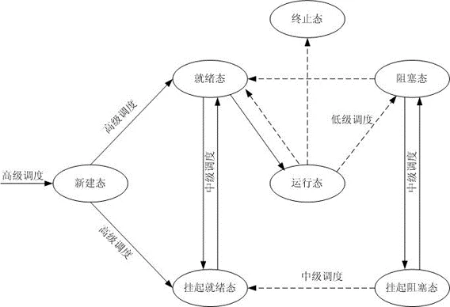

进程管理（操作系统）

- huuhghhgyg
- 1 min read

操作系统方面的进程管理
进程
进程是一个可并发执行的具有独立功能的程序关于某个数据集合的一次执行过程，是操作系统进行资源分配和保护的基本单位。进程是程序在处理机上的一次执行过程。
- 动态性：创建👉产生；调度👉执行；得不到资源👉阻塞；撤销👉消亡
- 并发性：多个进程可同时存在于内存中，在一段时间内同时运行。
- 独立性：独立获得资源的基本单位
- 异步性：各进程按各自独立的不可预知的速度执行
- 交往性（制约性）：进程至今啊相互制约，互斥地使用某些资源、相关进程之间同步、通信等。
进程的静态描述
- 进程控制块：反映了进程的动态特征。
- 程序段：能被调度程序选中，并在CPU上执行的程序代码段
- 数据段：进程对应的原始数据、中间或最终数据
进程控制块
进程控制块 PCB(Process Control Block)
- 是操作系统为了管理进程设置的一个数据结构，用于记录和描述进程。
- 系统利用PCB控制和管理进程。一个进程只有一个PCB，PCB是进程是否存在的唯一标记，是系统感知进程存在的唯一标志。
- 进程与PCB一一对应。
PCB包含如下信息：
- 描述信息：ID、进程组关系（父进程、子进程）
- 控制信息：状态、优先级、外存地址、运行同级信息等
- 资源管理信息：指针、占用内存大小等
- CPU现场保护结构：当前进程的执行被打断，储存进程现场数据
PCB组织方式：线性、链接（链表）、索引
进程上下文
操作系统中，把进程物理实体和支持进程运行的环境合称为进程上下文。 系统调度新进程时，新老进程的上下文将进行切换。
进程的状态
进程的三种基本状态
- 就绪态：已经得到除了CPU以外的其它资源
- 运行态：占用CPU
- 阻塞态：正在等待某一事件发生
进程的控制
fork()：进程创建。调用者用fork()建立一个子进程和自己独立并发地运行。创建的子进程基本拷贝父进程的上下文（正文段（代码）共享）fork()返回值为-1：进程创建不成功fork()返回值大于0：在父进程的上下文中，fork()返回值为子进程标识号fork()返回值等于0：在子进程的上下文中。
wait()：进程挂起等待（封锁）。调用者进入封锁状态等待它的子进程终止。exit()：进程终止。调用者将终止自己，并解除父进程的封锁（wait()）。execvp(filename,argp)：进程上下文更换。用文件名filename所指定的可执行文件来替换当前进程上下文中的程序和数据部分，并转入执行。
常见代码段
循环创建线程。如果创建不成功（返回值为1），则执行;语句
1while((i=fork()) == -1);
创建子线程。父线程和子线程将（将开始）同时在这里执行。
1i=fork();
判断现在执行的是父线程还是子线程
1if (i==0) // 子线程
2else // 父线程（i为大于0的进程id）
线程
线程和进程的区别和联系
- 线程是进程的一部分，它是进程内的一个执行体。
- 引入线程的操作系统中，资源分配的对象是进程，而不是线程。
- 引入线程的操作系统中，调度的基本单位是线程而不是进程。
- 进程之间可以并发执行，而一个进程中的这些线程之间亦可以并发执行。
- 进程调度，系统需要进行进程上下文的切换，需要大量的系统开销。
- 线程切换比进程切换快得多。
- 从一个进程的线程向另一个进程的线程切换，将引起线程的上下文切换。
- 从安全的角度来看，线程不如进程安全。
线程控制块
在管理线程的时候，同样也使用一种数据结构，称之为线程控制块TCB(Thread Control Block) 线程控制块包含如下信息：
- 线程标识信息：系统内唯一的标识符；
- 线程状态和调度信息
- 现场信息：主要是CPU内各个寄存器的内容
- 线程私有存储区：系统栈和用户栈的指针
- 指向PCB的指针：该线程归属于哪个进程，使用哪个进程的资源。
线程的状态
线程的关键状态有：
- 运行态
- 就绪态
- 阻塞态
线程的级别
内核级线程
内核线程的建立与销毁都是由操作系统负责 如果一个进程中没有就绪态的线程，这个进程也不会被调度占用CPU。
用户级线程
用户线程时不能被操作系统感知的。操作系统一如既往地进行进程调度，就像根本没有线程一样。 线程运行库决定运行哪一个用户线程。
混合式线程
混合式线程中，一个应用中的多个线程能同时在多处理器上并行执行，且阻塞一个线程时并不需要封锁整个进程。
进程调度
调度的层次

- 高级调度：建立PCB（存在于早期的操作系统，无内存参与调度）
- 中级调度：调入调出外存等待（得益于虚拟内存技术，将外存扩充为内存使用）。存在外存的进程为挂起态。
- 低级调度：内存中选取就绪态的进程占用资源执行
- 剥夺方式（抢占方式）
- 非剥夺方式（不可抢占式）
调度的概念
调度算法的分类和目标
所有系统
- 公平性
- 系统策略（调度策略）的强制执行
- 均衡性：各种类型的进程
批处理系统
- 吞吐量
- 周转时间
- CPU利用率
交互式系统
- 相应时间
- 相称性
实时系统：着重于实时提供服务
- 截止线
- 可预测性
批处理系统的调度
- 先来先服务FCFS(First-Come First-Served)：按照作业进入系统后备队列的先后次序挑选作业。属于非剥夺式算法。
- 最短作业优先SJF(Shortest Job First)：以进入系统的作业所要求的CPU时间长短为标准，字面意思。是一种非剥夺式算法。
- 最短剩余时间优先SRTF(Shortest Remaining Time First)：一个作业正在执行时，一个新作业进入就绪态，如果新作业需要的CPU时间比当前正在执行的作业剩余时间短，则新作业抢占并开始执行。是一种剥夺式算法。（称为最短剩余时间优先算法/SRTF算法）
- 高响应比优先HHRF(Highest Response Ratio First)：每当调度一个作业运行时，都要计算后被作业队列中每个队列的响应比，选择响应比最高的投入运行。属于非剥夺式算法。（可能会提高周转时间）响应比
交互式系统的调度
- 时间片轮转法RR(Round Robin)：当一个时间片结束时，强迫一个进程让出CPU，让它排列到就绪队列的尾部，等待下一轮调度。轮转法调度是一种剥夺式调度。
- 优先级调度(Priority)：
- 静态优先级：在进程创建时即被确定，在以后整个执行期间不再改变。
- 动态优先级：在进程的执行期间，按照某种原则不断修改进程的优先级。优先级一般随进程的等待时间、CPU占用时间变化。
- 多级反馈队列MFQ(Multi-level Feedback Queue)：多级反馈队列调度算法的主要思想是将就绪进程分为多个级别，系统相应建立多个就绪队列，较高优先级的队列一般分配给较短的时间片。调度程序每次先从高一级的就绪队列中选取可占有CPU的进程，同一队列中按时间片原则排队，只有在该队列为空时，才从较低一级的就绪队列中选取。
相关公式
周转时间相关
$$
周转时间 = 等待时间 + 执行时间
$$
$$
平均周转时间 = \frac{周转时间}{进程数量}
$$
带权周转时间相关
$$ 带权作业周转时间 = \frac{周转时间}{作业时间} $$
$$ 平均带权作业周转时间 = \frac{\sum_{i=1}^n\frac{周转时间}{作业时间}}{进程数量} $$
响应比
$$ 响应比 = \frac{作业周转时间}{作业估计计算时间} = \frac{等待时间 + 执行时间}{执行时间} = 1+\frac{等待时间}{执行时间} $$
- Tags:
- 编程